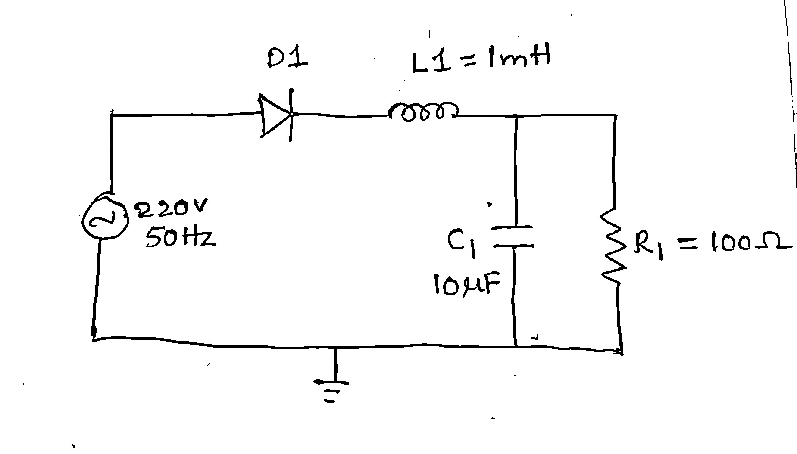
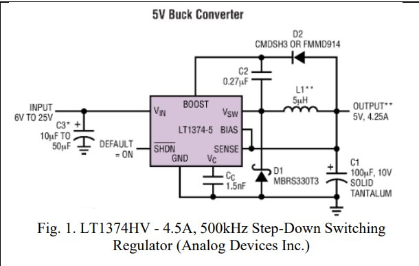
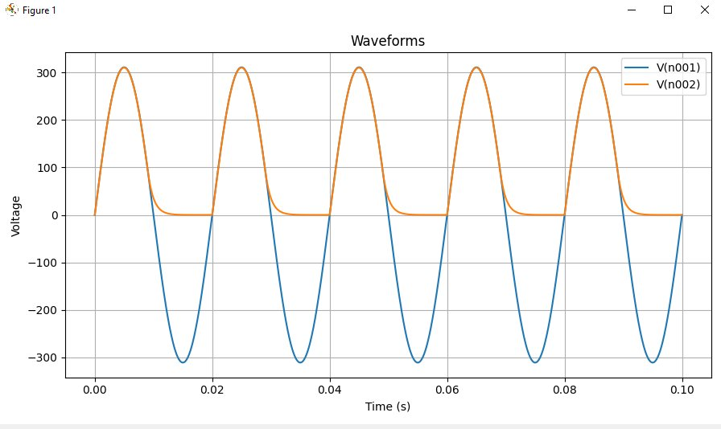
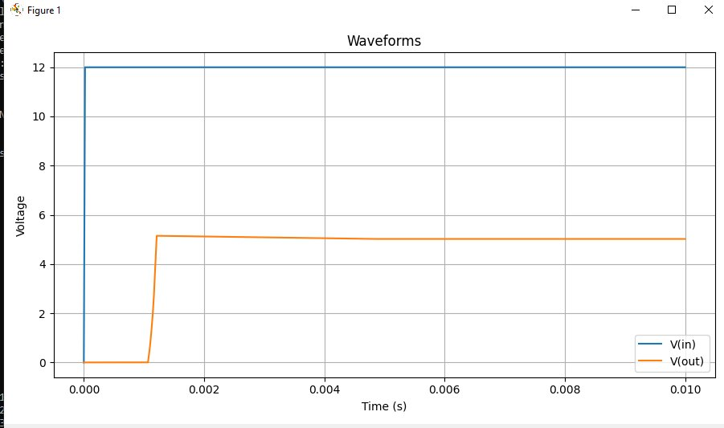

An AI-powered multi-agent pipeline that converts hand-drawn circuit schematics and IC application-note images into validated LTspice netlists and transient simulation waveforms — automatically.
Watch the pipeline process a hand-drawn half-wave rectifier sketch end-to-end — from raw photograph to LTspice waveform — in a single command.
Power electronics engineers spend 2–3 hours per circuit manually transcribing schematics into LTspice netlists — with a 15–20% error rate. Hand-drawn sketches from brainstorming sessions and IC datasheet schematics sit completely disconnected from simulation tools.
Existing EDA tools like KiCad and Eagle only work with clean, digitally-drawn schematics. OCR tools extract text but have zero understanding of circuit topology. No open tool bridges the gap from a raw schematic image to a validated, runnable simulation.
The pipeline handles two very different input types with dedicated agents for each.

220V/50Hz half-wave rectifier with D1, L1=1mH, C1=10µF, R1=100Ω — photographed from paper

LT1374HV 5V/4.25A buck converter from Analog Devices datasheet
Five cooperative AI agents work in sequence. GPT-4.1-mini replaces CNN-based symbol classifiers, Hough transform wire tracers, and OCR extractors — all through two specialized structured JSON prompts.
Gaussian blur (σ=1.5) + Otsu thresholding enhances contrast and suppresses noise before sending to the vision model.
preprocess.pyGPT-4.1-mini with VISION_SYSTEM_PROMPT extracts components, wires, junctions and texts as strict JSON. Temperature=0.1 for deterministic output.
vision_parser.py GPT-4.1-miniConstructs electrical net graph using pin-snap geometry (radius=18px). Detects floating pins, disconnected nets, and missing ground references.
graph_builder.pyDomain-aware rule-based rewiring for common power electronics topologies. Each repair action is logged with reason and confidence score (0.97 for all 4 repairs).
topology_repair.pyFuzzy part-number matching + pin label overlap scoring. LT1374HV matched at 0.90 confidence. Score = 0.75 × NameSim + 0.25 × PinOverlap.
ic_template_matcher.pyConverts repaired nets to LTspice .cir syntax. Validates syntax, .model definitions, and node assignments. Generates confidence score.
netlist_generator.py validator.pyPython subprocess invokes LTspice 26.0.1 in batch mode. Parses .raw output and plots waveforms via matplotlib. Target nodes selectable via CLI or natural language prompt.
ltspice_runner.pyBoth pipelines produce LTspice-compatible .cir files. Note the correct peak voltage conversion: 220V RMS → 311.127V peak (220√2).
// Hand-drawn: Half-wave rectifier
// App note: LT1374HV Buck Converter
Both circuits ran successfully in LTspice 26.0.1 (return_code: 0) and produced physically correct waveforms confirming the pipeline's end-to-end correctness.


The Topology Repair Agent raised overall confidence from ~0.43 to 0.807 by resolving ground inference, source polarity, and capacitor node assignment.
| Component | Pre-Repair | Post-Repair | Δ |
|---|---|---|---|
| D1 — Diode | +0.50 | ||
| L1 — Inductor | +0.45 | ||
| C1 — Capacitor | +0.47 | ||
| AC1 — Source | +0.29 | ||
| R1 — Resistor | +0.37 | ||
| Overall | ~0.43 | 0.807 | +0.377 |
Drop in any circuit image and get a validated LTspice simulation in under 5 minutes using the natural language agent interface.
Visit GitHub Profile